Business Forecasting
You are thinking of opening a wedding venue, a salón de eventos. The lease runs for ten years. Before you sign, you need a forecast: how many couples will marry next year, and in which months?
The data: every marriage registered in Mexico, month by month, since 1993. Data that come in order, one period after another, form a time series. This week: what a time series is made of, simple ways to forecast it, how to tell a good forecast from a bad one, and a forecast that uses every piece of the series.
Trend, season, cycle and noise.
marriages: the marriages registered in Mexico each month, January 1993 to December 2025, 396 months. Source: INEGI, Estadísticas de matrimonios.
| Column | Meaning |
|---|---|
year, month |
the year; the month, 1 = January … 12 = December |
t |
time: 1 = January 1993, 2 = February 1993, …, 396 = December 2025 |
marriages |
marriages registered that month |
lag1 |
marriages the month before |
lag12 |
marriages in the same month one year before |
What patterns do you see?
The trend: the long-run change in the level of the series, up or down.
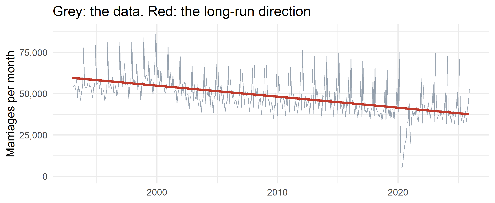
In the marriages: down. Fewer couples marry every year. Section 7 measures how fast.
The season: a pattern that repeats at the same time every year (or every week, or every day).
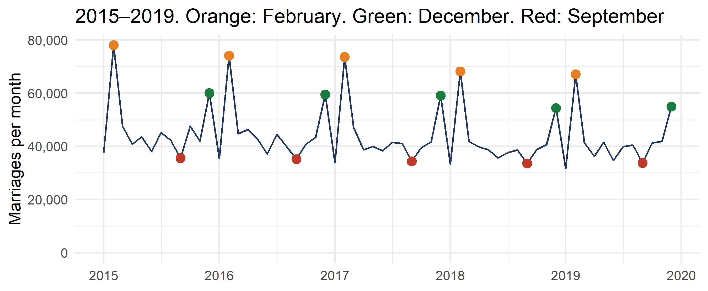
In the marriages: a peak every February and every December; September is low. The same shape, year after year.
The cycle: slow waves above and below the trend. Not always the same length, not at the same time of year. Often the business cycle.
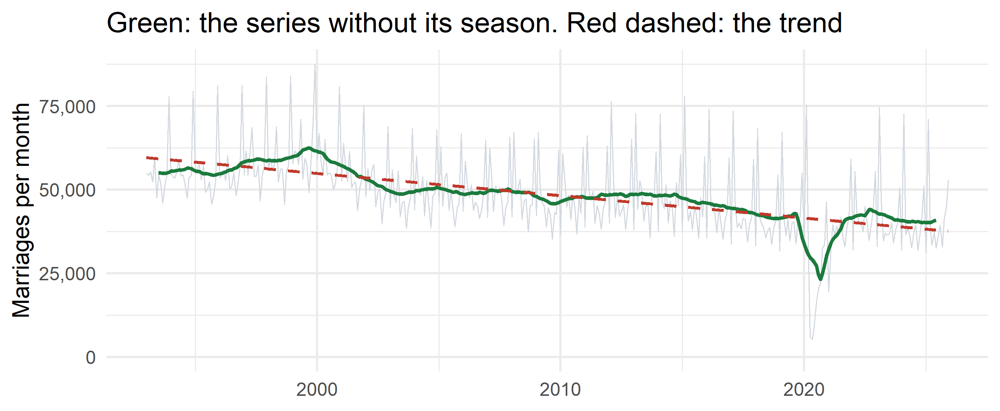
In the marriages: above the trend around 1997–2001 and again after 2022; far below it in 2020–2021.
The irregular part: what the trend, the season and the cycle cannot explain. Random, and the hardest part to forecast.
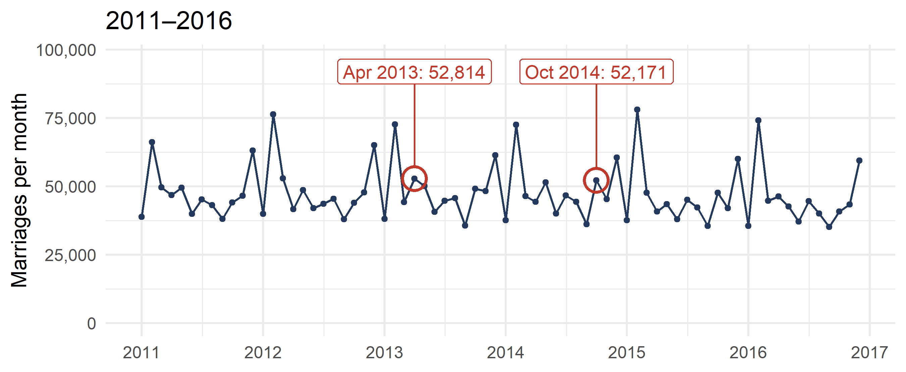
In the marriages: April 2013 had 52,814 marriages; the Aprils before and after had 41,629 and 44,368. October 2014 jumped the same way. The bumps did not come back the next year: no trend, season or cycle explains them. The biggest surprise of the record: spring 2020.
\[\cssId{mt-y}{y_t} = \cssId{mt-T}{T_t} \times \cssId{mt-S}{S_t} \times \cssId{mt-C}{C_t} \times \cssId{mt-R}{R_t}\]
| Piece | In the marriages |
|---|---|
| Trend | down since about 1999 |
| Season | February and December high, September low, every year |
| Cycle | above the trend around 1997–2001; far below it in 2020–2021 |
| Irregular | month-to-month surprises; a shock in 2020 |
The pieces multiply: a seasonal index of 1.35 adds 35% to whatever level the trend and the cycle give. In a good year that is more weddings than in a bad year. This is the multiplicative model. A made-up example, built piece by piece (appendix)
samesex: same-sex marriages registered in Mexico, March 2010 (Mexico City allowed them first) to December 2025. Source: INEGI, Estadísticas de matrimonios.
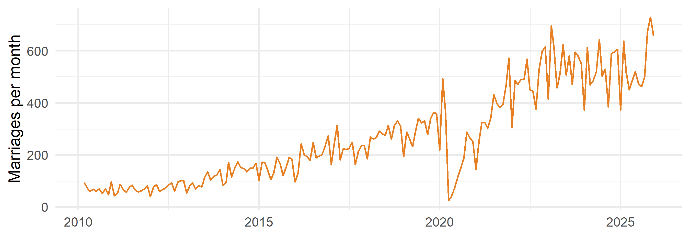
Should the venue also plan for same-sex weddings? Which piece dominates this series?
The trend: 689 in 2010 (ten months), 6,481 in 2025, about 9 times more. The season is there too, but small next to the trend. Is it a straight line? (appendix)
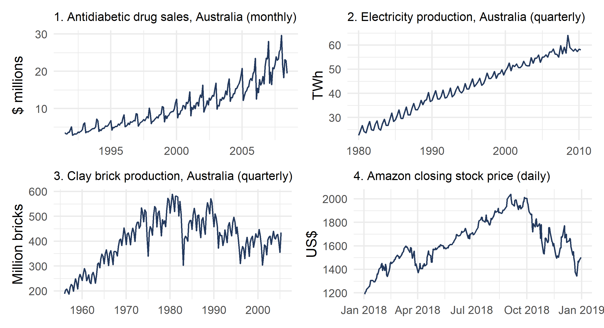
Sources: tsibbledata package (Australian Bureau of Statistics; Yahoo Finance).
| Series | Pieces |
|---|---|
| 1. Drug sales | a trend up and a season: sales climb all year, peak in December–January and fall sharply in February (patients stock up before a government subsidy resets each January); the swings grow with the level |
| 2. Electricity | a trend up, then flat; a season (high in the Australian winter) |
| 3. Bricks | a season, and long cycles of building booms and busts |
| 4. Amazon | no regular pattern: the price wanders, hard to forecast |
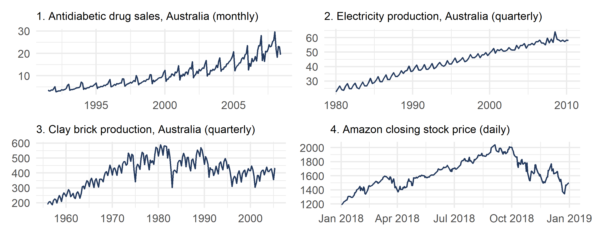
Stationary series Autocorrelation First differences (appendix)
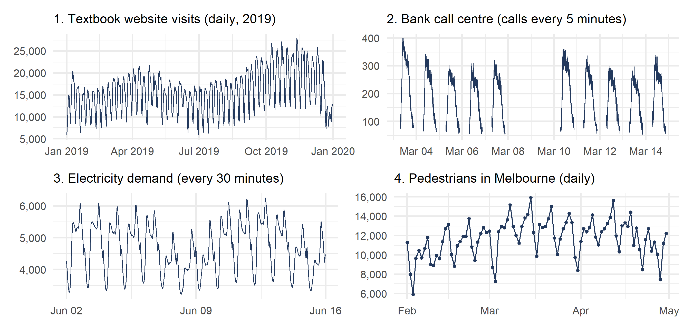
Sources: fpp3 package (OTexts.com page views; a North American bank, 2003; City of Melbourne pedestrian counts) and tsibbledata (Australian Energy Market Operator).
Which season does each series show? What is one period, and how many periods make one season?
| Series | One period | The season | Periods in one season, \(S\) |
|---|---|---|---|
| 1. Textbook website | a day | the week: fewer visits at weekends; also the year: fewer in the July and December holidays | 7 |
| 2. Bank calls | 5 minutes | the day: calls rise to a peak around 10 a.m., then fall; Monday is the busiest day | 169 (7 a.m.–9 p.m.) |
| 3. Electricity | 30 minutes | the day: low at night, a peak around 6 p.m.; also the week: lower at weekends | 48 a day; 336 a week |
| 4. Pedestrians | a day | the week: most on Fridays, fewest on Sundays | 7 |
A season is any pattern that repeats after a fixed number of periods: a year of months, a week of days, a day of half-hours. The rules and the moving averages ahead use that number, \(S\).
Rules anyone can apply, and how sure each one is.
Pretend it is the end of December 2024 and forecast 2025: then we can check against what happened. One period of the data is a month: up to December 2024 there are \(T = 384\) periods. The forecast \(h\) periods ahead is \(\hat y_{T+h}\): \(h = 1\) is January 2025, \(h = 12\) is December 2025.
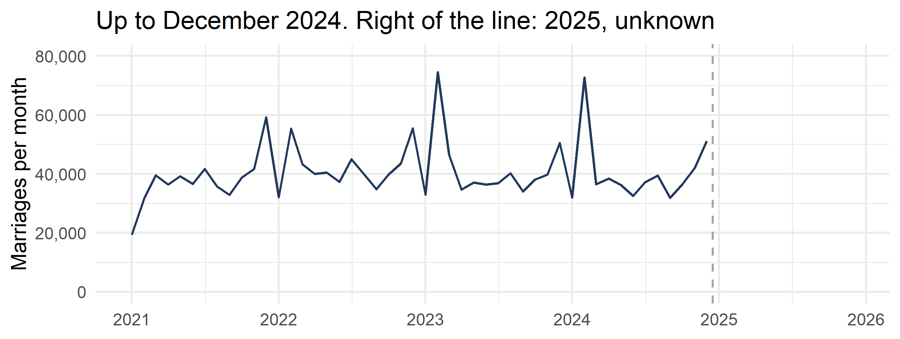
Four simple rules, one at a time: naive, seasonal naive, mean, moving average.
The forecast for every future period is the last value we saw:
\[\hat y_{T+h} = \cssId{mt-fnaive}{y_T}\]
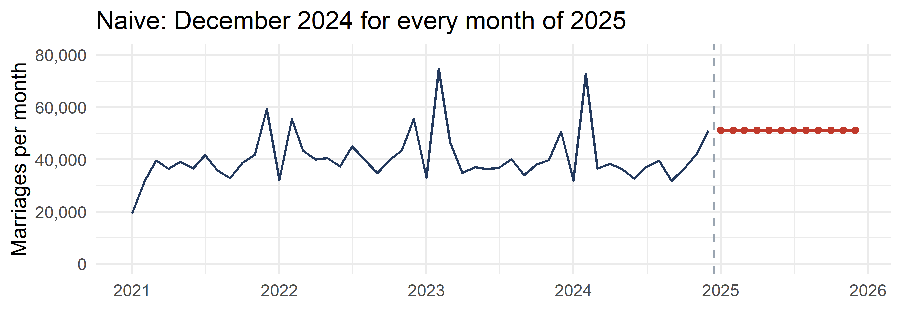
It uses one number: the last period. For the marriages that is December, a peak month, so every month of 2025 gets a December. It works for a series with no season whose level wanders: a stock price, an exchange rate.
Each future period is the same period one season before:
\[\hat y_{T+h} = \cssId{mt-fsnaive}{y_{T+h-S}}\]
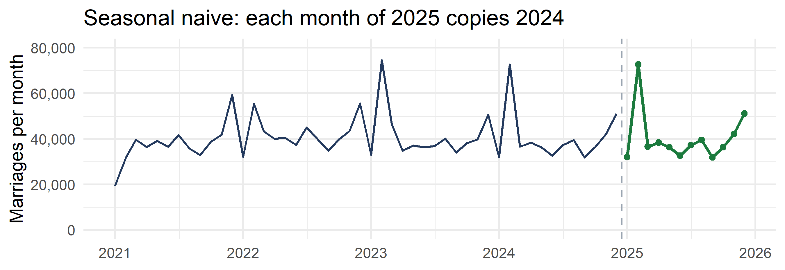
It keeps the season: for the marriages, a low January and peaks in February and December. It ignores any trend since one season ago, and it copies that season’s surprises too.
Every future period gets the average of all the past:
\[\hat y_{T+h} = \cssId{mt-fmean}{\bar y} = \frac{y_1 + y_2 + \cdots + y_T}{T}\]
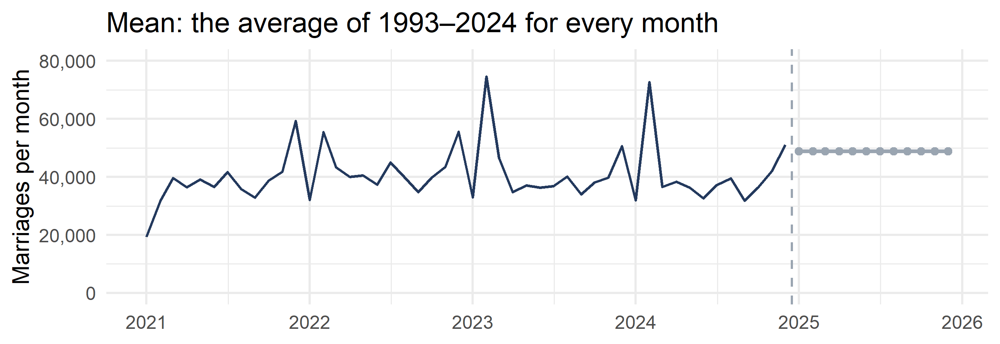
For the marriages, January 1993 counts as much as last month. With a trend down, the old high years pull the forecast up. It works only when the level never moves: no trend, no season.
Every future period gets the mean of the last \(k\) periods:
\[\hat y_{T+h} = \frac{y_T + y_{T-1} + \cdots + \cssId{mt-fmak}{y_{T-k+1}}}{k}\]
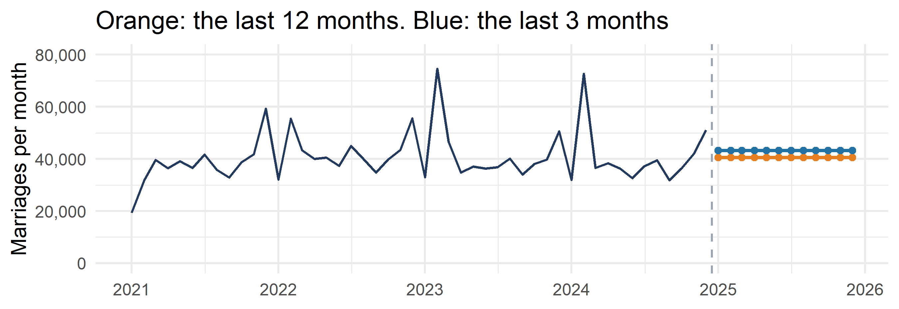
Between the naive rule (\(k = 1\)) and the mean (\(k = T\)). A window of one full season, \(k = S\), averages the season away and gives the recent level. For the marriages: twelve months give the recent level; three months follow October to December, busy months.
A moving-average forecast uses only the past: the mean of the last \(k\) periods. For the marriages:
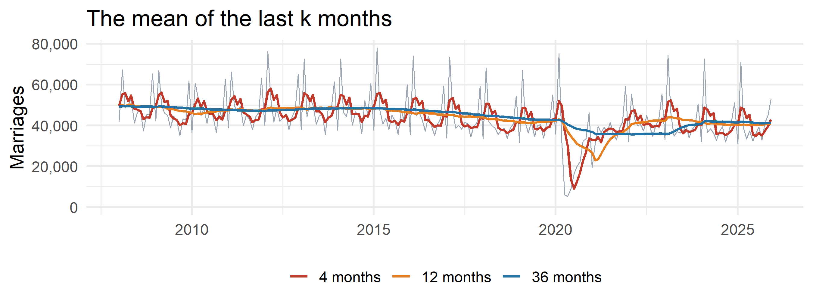
What does a short window do? And a long one?
| Rule | Forecast of \(y_{T+h}\) | The idea | What it ignores |
|---|---|---|---|
| Naive | \(y_T\) | the future looks like the last period | the season |
| Seasonal naive | \(y_{T+h-S}\) | the same period one season before: next January like last January | the trend since one season ago |
| Mean | \(\bar y = (y_1 + \cdots + y_T)/T\) | the future looks like the average past | the trend and the season |
| Moving average of \(k\) | \((y_T + \cdots + y_{T-k+1})/k\) | the average of the last \(k\) periods | the season (for \(k < S\)) or the latest changes (long \(k\)) |
Which rule would you trust for January 2025?
The marriages of 2024, month by month:
| Jan | Feb | Mar | Apr | May | Jun | Jul | Aug | Sep | Oct | Nov | Dec |
|---|---|---|---|---|---|---|---|---|---|---|---|
| 32,002 | 72,690 | 36,510 | 38,383 | 36,310 | 32,591 | 37,234 | 39,470 | 31,893 | 36,374 | 42,063 | 51,125 |
The mean of all 384 months from January 1993 to December 2024 is 48,758.
Naive 51,125 (December); seasonal naive 32,002 (January 2024); mean 48,758; 12 months 40,554; 3 months 43,187. The seasonal naive is closest: the only rule that knows January is a low month.
Click a rule in the legend to switch it on or off.
Measure the misses on months the method has not seen.
\[\cssId{mt-resid}{u_t} = y_t - \hat y_t \qquad\qquad \cssId{mt-ferr}{e_{T+h}} = y_{T+h} - \hat y_{T+h \mid T}\]
Which ones are larger, in a typical month?
A simulated series: a straight-line trend plus noise. The line is fitted on the black points only.
Typical = the square root of the mean squared distance. Simulated data, from the old chapter 6 slides.
Judge a method on months it has not seen:
Twelve errors per method. How do we turn twelve numbers into one? One step at a time (appendix)
\[ME = \frac{1}{n}\sum_{t} \cssId{mt-me-e}{e_t}\]
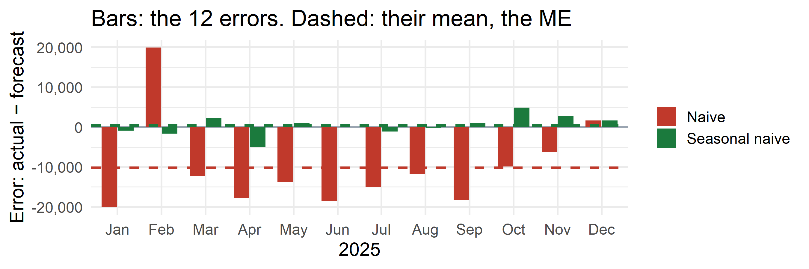
| Good | Watch out |
|---|---|
| The sign shows the direction: the naive ME, -10,155, says it forecast too many marriages all year | Misses up and down cancel: the seasonal naive ME is 416, yet it missed some months by almost 5,000 |
| In marriages: easy to read | An ME of 0 does not mean the forecasts were right |
\[MAE = \frac{1}{n}\sum_{t} \cssId{mt-mae-abs}{\lvert e_t \rvert}\]
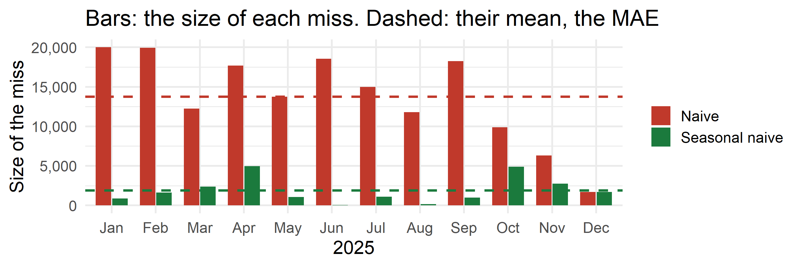
| Good | Watch out |
|---|---|
| The size of a typical miss, in marriages: naive 13,759, seasonal naive 1,872 | No direction: too high and too low look the same |
| Easy to explain to a manager | In the units of \(y\): it cannot compare series in different units |
\[MSE = \frac{1}{n}\sum_{t} \cssId{mt-mse-sq}{e_t^2}\]
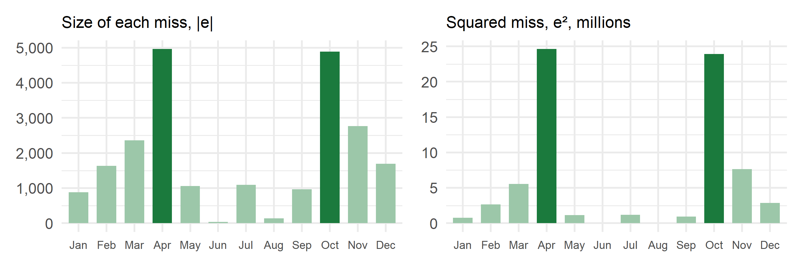
The seasonal naive, 2025. Its two biggest misses, April and October, make 44% of the total size of its misses, but 68% of the total of its squared misses.
| Good | Watch out |
|---|---|
| Big misses count much more. Use it when one big miss costs more than many small ones: a venue staffed for thousands of couples too few | In units of \(y\) squared, “marriages squared”: naive 219,327,616, seasonal naive 5,942,794. Hard to read |
| Picks the method with fewer big misses | One extreme month can dominate it |
\[RMSE = \cssId{mt-rmse-root}{\sqrt{MSE}} = \sqrt{\frac{1}{n}\sum_{t} e_t^2}\]
2025, the forecasts made at the end of 2024:
| MAE | MSE | RMSE | RMSE / MAE | |
|---|---|---|---|---|
| Naive | 13,759 | 219,327,616 | 14,810 | 1.08 |
| Seasonal naive | 1,872 | 5,942,794 | 2,438 | 1.30 |
| Good | Watch out |
|---|---|
| Back in marriages, and it still punishes big misses | Harder to explain than the MAE |
| RMSE ≥ MAE always. The naive misses by a lot every month: RMSE close to its MAE. The seasonal naive has a few big misses: a larger gap | Still in units: it cannot compare series in different units |
\[MPE = \frac{100}{n}\sum_{t} \cssId{mt-mpe-r}{\frac{e_t}{y_t}}\]
The seasonal naive, 2025: all marriages and same-sex marriages.
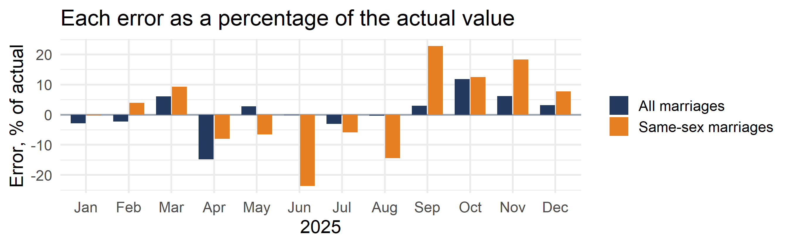
| Good | Watch out |
|---|---|
| No units, and the sign shows the direction: MPE 0.8% for all marriages, 1.3% for same-sex | Ups and downs cancel, as in the ME |
| Compares the bias of series in different units | It explodes when \(y\) is close to 0, and fails at 0 |
\[MAPE = \frac{100}{n}\sum_{t} \cssId{mt-mape-r}{\frac{\lvert e_t \rvert}{\lvert y_t \rvert}}\]
Which series does the seasonal naive forecast better?
| Series, 2025 | MAE | MAPE |
|---|---|---|
| All marriages | 1,872 | 4.7% |
| Same-sex marriages | 62 | 11.1% |
| Good | Watch out |
|---|---|
| No units: the MAE makes same-sex marriages look easier (62 against 1,872), but they are a smaller series; in percent they are missed by more | No direction |
| Easy for a manager: “we are off by about 5% in a typical month” | It explodes when \(y\) is close to 0, and fails at 0 |
\(n\) forecast errors \(e_t = y_t - \hat y_t\):
| Measure | Formula | It tells you | Units |
|---|---|---|---|
| ME, mean error | \(\frac{1}{n}\sum e_t\) | bias: below 0, the forecasts are too high | of \(y\) |
| MAE, mean absolute error (also MAD) | \(\frac{1}{n}\sum \cssId{mt-abse}{\lvert e_t \rvert}\) | the size of a typical miss | of \(y\) |
| MSE, mean squared error | \(\frac{1}{n}\sum e_t^2\) | size; a big miss counts much more | of \(y\), squared |
| RMSE, root mean squared error | \(\sqrt{MSE}\) | the same, back in units of \(y\) | of \(y\) |
| MPE, mean percentage error | \(\frac{100}{n}\sum e_t / y_t\) | bias, in percent | % |
| MAPE, mean absolute percentage error | \(\frac{100}{n}\sum \lvert e_t \rvert / \cssId{mt-absy}{\lvert y_t \rvert}\) | a typical miss, in percent | % |
In ME and MPE, misses up and misses down cancel: a mean error of 0 does not mean the forecasts were right. MAPE and MPE have no units: use them to compare forecasts of things measured in different units, such as pesos and days.
The first six months of 2025, and the forecasts made at the end of 2024:
| Month | Actual | Seasonal naive | Naive |
|---|---|---|---|
| Jan | 31,124 | 32,002 | 51,125 |
| Feb | 71,056 | 72,690 | 51,125 |
| Mar | 38,868 | 36,510 | 51,125 |
| Apr | 33,420 | 38,383 | 51,125 |
| May | 37,368 | 36,310 | 51,125 |
| Jun | 32,555 | 32,591 | 51,125 |
All twelve months of 2025:
| Method | ME | MAE | RMSE | MPE | MAPE |
|---|---|---|---|---|---|
| Naive | -10,155 | 13,759 | 14,810 | -31.4% | 36.6% |
| Seasonal naive | 416 | 1,872 | 2,438 | 0.8% | 4.7% |
| Mean | -7,788 | 12,181 | 13,299 | -25.3% | 31.8% |
| Moving average, 12 months | 416 | 7,542 | 10,788 | -4.2% | 17.1% |
| Moving average, 3 months | -2,217 | 8,741 | 11,005 | -11.0% | 21.2% |
The seasonal naive rule: ME = 416 marriages. A real bias, or chance?
\[H_0: E(e_t) = 0 \qquad \text{against} \qquad H_A: E(e_t) \neq 0\]
\[T = \frac{\bar e - 0}{\cssId{mt-sebar}{s_e / \sqrt{n}}} \sim t_{n-1} \quad \text{if } H_0 \text{ is true}\]
For “too low on average” (the forecasts under-predict), the alternative is \(H_A: E(e_t) > 0\); for “too high”, \(H_A: E(e_t) < 0\).
The 12 errors of the seasonal naive rule in 2025: mean \(\bar e = 416\), standard deviation \(s_e = 2{,}509\).
A forecast that uses the trend, the season and the cycle at once.
| Rule | What it uses | What it throws away |
|---|---|---|
| Naive | the last month | the season: December’s level for every month |
| Seasonal naive | the season, and last year’s level | the trend since last year, the cycle; one noisy year |
| Mean | the average level of every past year | the trend, the season, the cycle |
| Moving average | the recent level | the season and the trend |
Each rule keeps one piece of the series and throws the rest away. We know more than that: the series has a trend, a season and a cycle. To use all the information we have, estimate each piece and put them all into the forecast:
\[\hat y_{T+h} = \hat S_{T+h} \times \hat T_{T+h} \times \hat C_{T+h} \times R_{T+h}\]
The data mix the four pieces. Take them apart one at a time:
| Step | What we do | What we get |
|---|---|---|
| 1 | Smooth the season away with a moving average | the series without its season |
| 2 | Compare the data with the smooth series | the seasonal indices \(S\) |
| 3 | Fit a line through the smooth series; divide by it | the trend \(T\) and the cycle \(C\) |
| 4 | Multiply the pieces for a future month | the forecast |
Then test it on 2025, like the simple rules: does using every piece pay?
A moving average that covers one full year.
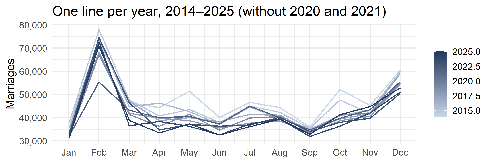
How could we tell which part of each month’s count is due to the season?
To smooth, use a moving average: replace each month by the mean of the months around it.
The month in focus sits in the middle, with two months before and two after:
\[MA(5)_t = \frac{y_{t-2} + y_{t-1} + \cssId{mt-ma5c}{y_t} + y_{t+1} + y_{t+2}}{\cssId{mt-ma5n}{5}}\]
Does a window of 5 months remove the season?
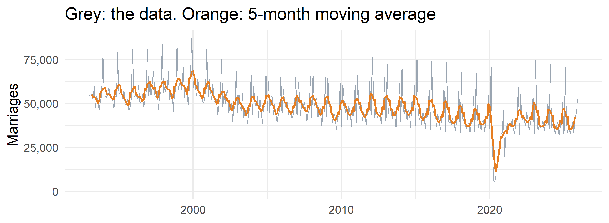
No. Some windows hold a peak month, others do not: the line still jumps every year.
Twelve months in the window: each month of the year exactly once.
\[MA(12)_t = \frac{y_{t-6} + \dots + y_{t-1} + y_t + y_{t+1} + \dots + y_{t+5}}{\cssId{mt-ma12n}{12}}\]
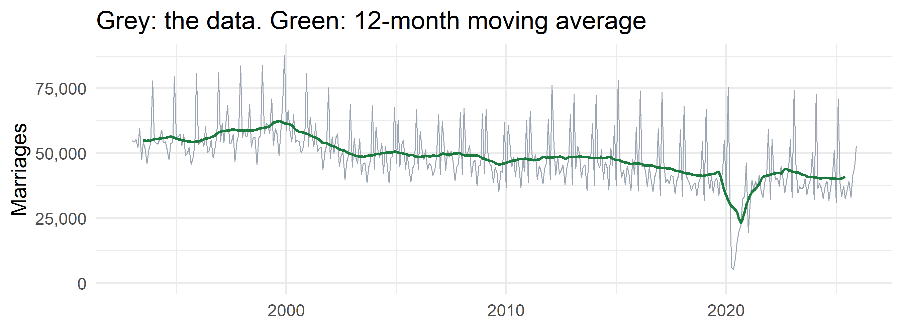
The season is gone. The rule: the window must cover one full season. 12 for monthly data, 4 for quarterly data, 7 for daily data with a weekly pattern.
Which windows give a smooth line?
Even windows use the centred average of the next slides.
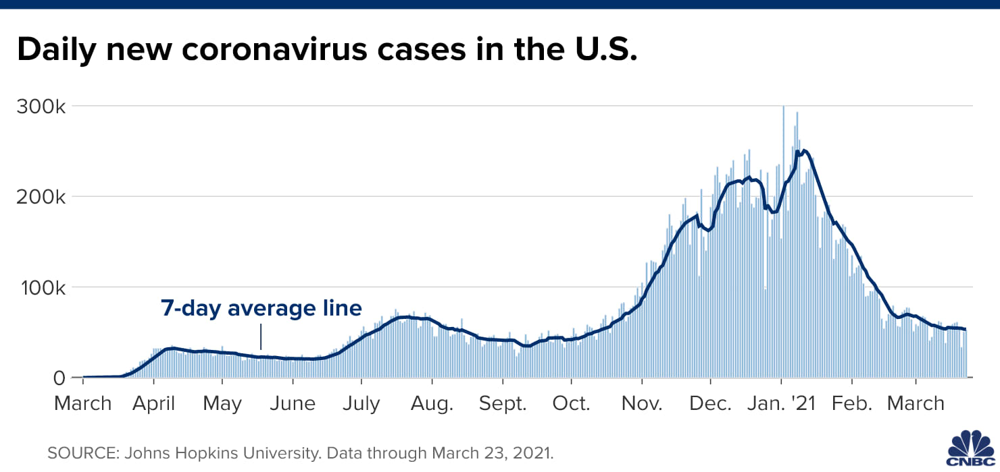
What was the “season” in the daily COVID-19 counts?
The day of the week: fewer tests at weekends. A 7-day average holds each day of the week once.
With 12 months there is no middle month: 6 before and 5 after, or 5 before and 6 after. Take both and average them:
\[CMA_t = \frac{1}{2} \times \cssId{mt-cmaA}{\frac{y_{t-6} + \cdots + y_{t+5}}{12}} \;+\; \frac{1}{2} \times \cssId{mt-cmaB}{\frac{y_{t-5} + \cdots + y_{t+6}}{12}}\]
For quarterly data, the same with 4: \(CMA_t = \frac{1}{2} \times \frac{y_{t-2} + \cdots + y_{t+1}}{4} + \frac{1}{2} \times \frac{y_{t-1} + \cdots + y_{t+2}}{4}\).
The first and the last six months have no CMA: their windows run past the data. The weights, line by line
The centred moving average of February 2025 (\(t = 386\)). The marriages from 6 months before to 6 months after:
| Aug 24 | Sep 24 | Oct 24 | Nov 24 | Dec 24 | Jan 25 | Feb 25 | Mar 25 | Apr 25 | May 25 | Jun 25 | Jul 25 | Aug 25 |
|---|---|---|---|---|---|---|---|---|---|---|---|---|
| 39,470 | 31,893 | 36,374 | 42,063 | 51,125 | 31,124 | 71,056 | 38,868 | 33,420 | 37,368 | 32,555 | 36,146 | 39,333 |
How far each month sits above or below a typical month.
Compare each month with the smooth series:
\[\cssId{mt-sf}{SF_t} = \frac{y_t}{\cssId{mt-sfcma}{CMA_t}}\]
February 2025: \(SF = 1.771\). But one year is noisy.
The season is the same every year, so average the factors of each month over the years. For February:
\[\cssId{mt-sfeb}{S_{\text{Feb}}} = \frac{SF_{\text{Feb 1994}} + SF_{\text{Feb 1995}} + \cdots + SF_{\text{Feb 2025}}}{\cssId{mt-nfeb}{n_{\text{Feb}}}}\]
The seasonal factors of every month, 1993–2025, one box per month:
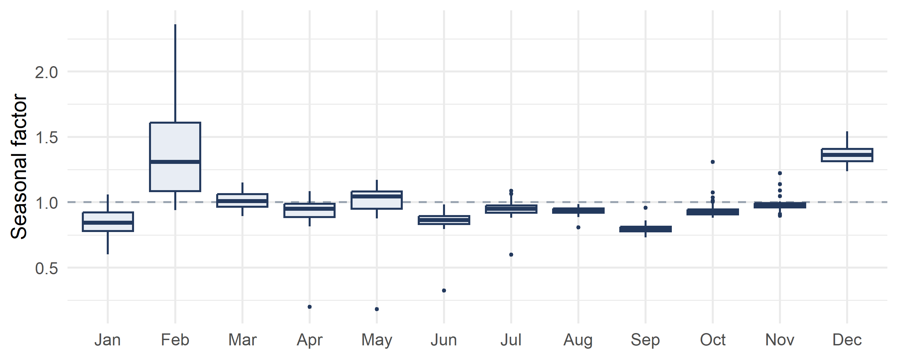
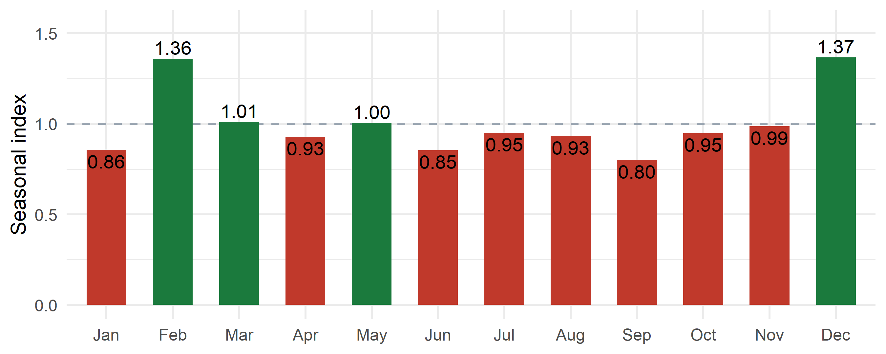
Each index measures a month against a typical month. So the twelve indices must average 1: they add up to 12, the number of seasons.
Ours add up to 11.9924. Rescale each one:
\[\cssId{mt-sstar}{S^*_m} = S_m \times \frac{\cssId{mt-s12}{12}}{\cssId{mt-ssum}{S_{\text{Jan}} + S_{\text{Feb}} + \dots + S_{\text{Dec}}}}\]
| Jan | Feb | Mar | Apr | May | Jun | Jul | Aug | Sep | Oct | Nov | Dec | |
|---|---|---|---|---|---|---|---|---|---|---|---|---|
| Average | 0.8555 | 1.3589 | 1.0095 | 0.9288 | 1.0048 | 0.8538 | 0.9495 | 0.9320 | 0.7998 | 0.9481 | 0.9859 | 1.3657 |
| Rescaled | 0.8561 | 1.3598 | 1.0101 | 0.9294 | 1.0055 | 0.8543 | 0.9501 | 0.9326 | 0.8003 | 0.9487 | 0.9865 | 1.3666 |
Here the change is small. If one index is missing, the sum gives it: the missing index is the number of seasons minus the others.
Divide each month by its index: what the month would be with no season.
\[\cssId{mt-sa}{\frac{y_t}{S^*_t}}\]
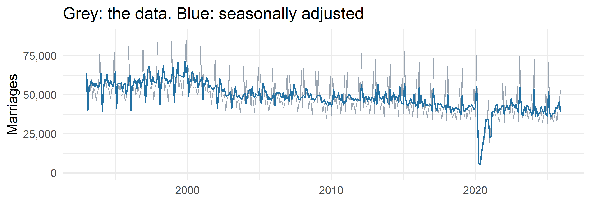
Unlike the CMA, it keeps the noise, and it exists for every month, up to December 2025. Either one, the CMA or \(y_t / S^*_t\), can be used to fit the trend of step 3.
International airline passengers, monthly, 1949–1960 (R’s own AirPassengers). The same steps: the CMA, the seasonal indices, then \(y_t / S^*_t\).
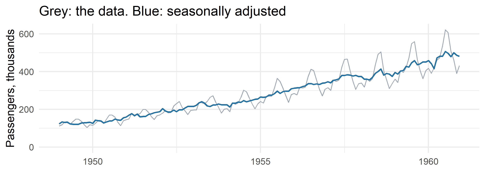
| Typical change from one month to the next | The data | Seasonally adjusted |
|---|---|---|
| Air passengers | 10.7% | 3.7% |
| Marriages, 1993–2019 | 25.2% | 12.0% |
The summer peak of the air passengers has the same shape every year, so the indices take it out almost completely. The February and December peaks of the marriages change size from year to year, so part of the season stays in.
With the season out: the long run, and the waves around it.
The CMA has no season. Fit a straight line through it, with time as the regressor:
\[CMA_t = a + b\,\cssId{mt-tt}{t} + e_t \qquad\Longrightarrow\qquad \cssId{mt-Tt}{T_t} = \hat a + \hat b\,t\]
OLS, as in weeks 7 to 12. How fast is the market shrinking?
The regression of the CMA on time:
Call:
lm(formula = cma ~ t, data = marriages)
Residuals:
Min 1Q Median 3Q Max
-17833 -1697 160 2285 7365
Coefficients:
Estimate Std. Error t value Pr(>|t|)
(Intercept) 59581.656 363.537 163.89 <2e-16 ***
t -55.548 1.599 -34.74 <2e-16 ***
---
Signif. codes: 0 '***' 0.001 '**' 0.01 '*' 0.05 '.' 0.1 ' ' 1
Residual standard error: 3473 on 382 degrees of freedom
(12 observations deleted due to missingness)
Multiple R-squared: 0.7596, Adjusted R-squared: 0.7589
F-statistic: 1207 on 1 and 382 DF, p-value: < 2.2e-16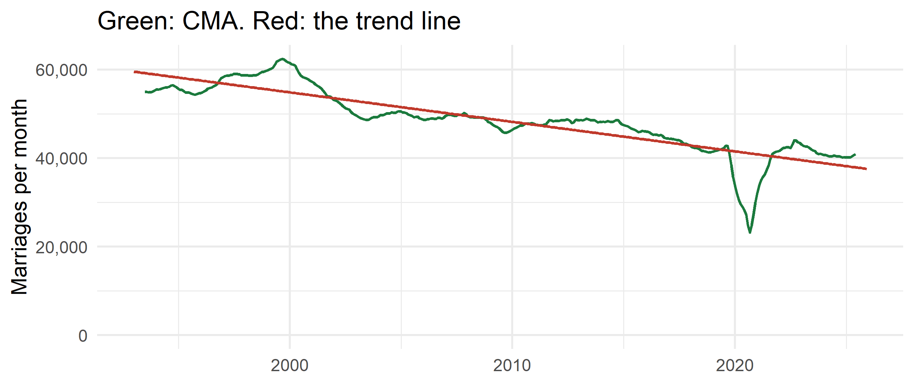
The smooth series has no season. Divide it by the trend; what is left is the cycle:
\[\cssId{mt-cyc}{C_t} = \frac{CMA_t}{\cssId{mt-cycT}{T_t}}\]
Which years were good for weddings, and which were bad? Where is the cycle now?
The trend line: \(T_t = 59{,}581.66 - 55.548\,t\).
| Month | \(t\) | CMA |
|---|---|---|
| Sep 2020 | 333 | 23,251.54 |
| Jun 2025 | 390 | 40,899.38 |
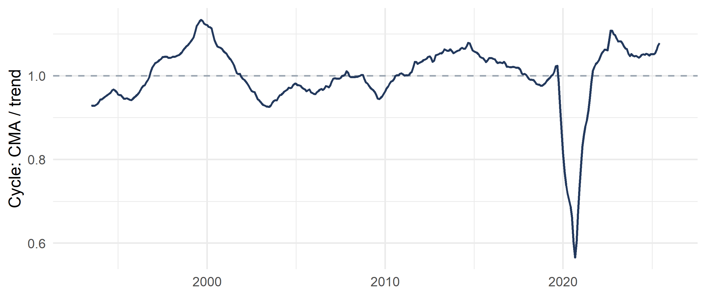
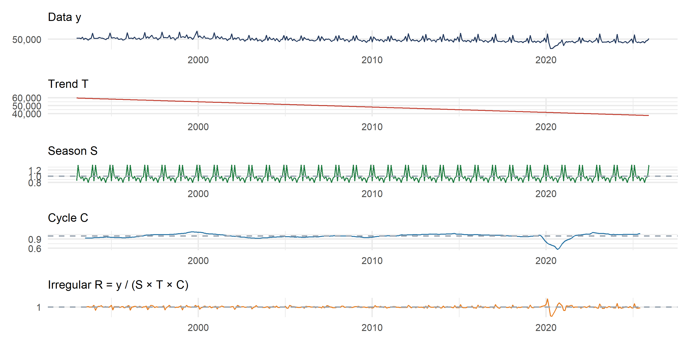
The irregular part is what is left: \(R_t = y_t / (S_t \times T_t \times C_t)\). Multiply the four back together and you get the data.
A forecast from every piece, and a test.
\[\hat y_t = \cssId{mt-fS}{S_t} \times \cssId{mt-fT}{T_t} \times \cssId{mt-fC}{C_t} \times \cssId{mt-fR}{R_t}\]
January 2026 is \(t = 397\).
\[\hat y_{397} = 0.8561 \times 37{,}529 \times 1.0786 \times 1 = 34{,}654 \text{ marriages}\]
Step 1: an interval for the trend. The prediction interval of the trend regression at \(t = 397\), as in weeks 8 and 12:
\[\hat T_{397} \pm t_{\alpha/2,\,n-2}\; \cssId{mt-pise}{s\sqrt{1 + \frac{1}{n} + \frac{(397 - \bar t)^2}{\sum_t (t - \bar t)^2}}}\]
Step 2: multiply both ends by \(S\) and \(C\): \((30{,}662,\ 44{,}396) \times 0.8561 \times 1.0786 = (28{,}313,\ 40{,}994)\).
This is too narrow: it treats \(S\) and \(C\) as known, and the cycle is only a guess. The true uncertainty is larger.
The venue sets its staff by month. Forecast December 2026, \(t = 408\), with a 95% interval. \(S_{\text{Dec}} = 1.3666\), \(C = 1.0786\), and the trend line of Exercise 6. The prediction interval of the trend regression:
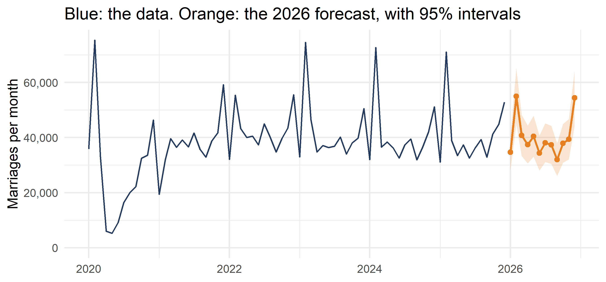
The four steps on the data up to December 2024, then a forecast of 2025, month by month:
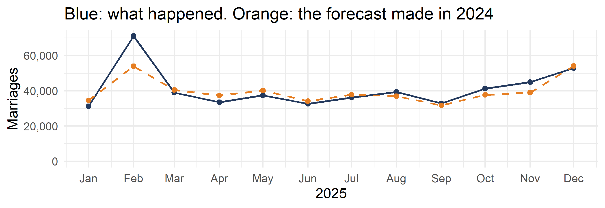
| Method | ME | MAE | RMSE | MPE | MAPE |
|---|---|---|---|---|---|
| Naive | -10,155 | 13,759 | 14,810 | -31.4% | 36.6% |
| Seasonal naive | 416 | 1,872 | 2,438 | 0.8% | 4.7% |
| Mean | -7,788 | 12,181 | 13,299 | -25.3% | 31.8% |
| Moving average, 12 months | 416 | 7,542 | 10,788 | -4.2% | 17.1% |
| Moving average, 3 months | -2,217 | 8,741 | 11,005 | -11.0% | 21.2% |
| Decomposition (sections 4–8) | 1,194 | 3,847 | 5,714 | 0.9% | 8.4% |
2025 forecast from data that end 1, 2 and 3 years earlier. MAPE:
| Ahead | Data up to | Seasonal naive | Decomposition |
|---|---|---|---|
| 1 year | December 2024 | 4.7% | 8.4% |
| 2 years | December 2023 | 6.5% | 9.1% |
| 3 years | December 2022 | 10.3% | 8.9% |
| The series | Methods that fit |
|---|---|
| No trend, no season, a stable level | the mean |
| A level that wanders or shifts | the naive rule; exponential smoothing (appendix) |
| A season | the seasonal naive; the decomposition |
| A trend | the trend line of the decomposition; Holt’s method (appendix) |
Whatever the method: hold out the last months, forecast them, and compare MAE, RMSE and MAPE with the simple rules. Exponential smoothing and Holt (appendix)
Weekly exercise sets: W13_exercises.pdf and W14_exercises.pdf, with solutions in W13_solutions.pdf and W14_solutions.pdf.
You can already solve: week 13 set, 1, 3, 6, 9 (a), (c), (d), 10 and 11; week 14 set, 1, 2 and 4–8. With the appendix: week 13 set 2, 4, 5, 7, 8 and 9 (b); week 14 set 3, 9 and 10.
R tasks: week 13 set 12–14 and week 14 set 11–12 ask for R. The exam practice works them by hand from the output.
Suggested before the next class, closest to the exam:
| Set | Exercise | Topic | How |
|---|---|---|---|
| W14 | 7 | Naive, seasonal naive and moving-average forecasts | By hand |
| W14 | 8 | Five forecast errors: ME, MAD, MSE, RMSE, MPE, MAPE | By hand |
| W13 | 9 | Online clients: seasonal factors, a forecast, a test for bias | By hand |
| W13 | 11 | Which moving average removes a quarterly season? | By hand |
| W13 | 10 | How many seasonal indices? | By hand |
The week 13 and week 14 sets, and Part 4 of the Spring 2026 final. ← Back to the summary ← Back to Practice for this week
[W13 set #2]
Consider a stationary monthly time series with 60 observations and a marked semiannual (every six months) seasonal pattern. Which autocorrelation coefficients would you expect to be clearly different from zero? Justify.
Lags 6, 12, 18, …: values six months apart are at the same point of the pattern. With a smooth pattern, lags 3, 9, … are clearly negative too: half a cycle apart, a peak meets a trough. A SIMULATED example, 60 months:
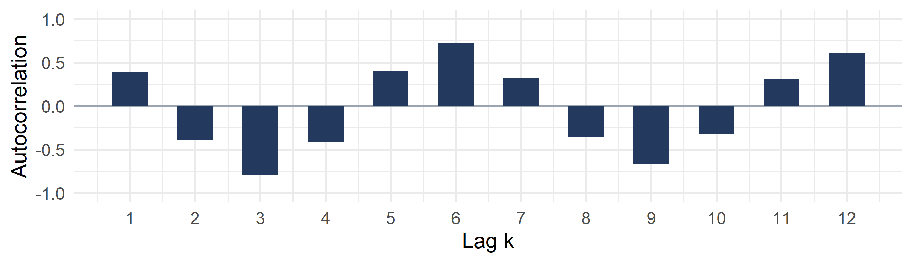
[W13 set #3]
For each series, which patterns would you expect? Make your assumptions explicit.
DVD sales over the last 10 years in your local store.
Hourly heart-pulse frequency of a person over one week.
Daily sales of a pizzeria over 6 months.
Daily coffee sales in a Starbucks over 12 months.
Weekly electricity consumption in your locality over the last 10 years.
| Patterns | |
|---|---|
| (a) | a trend down (streaming); a season (more at Christmas) |
| (b) | a daily season (high in the day, low at night); random noise |
| (c) | a weekly season (weekends high); maybe a trend if the business grows |
| (d) | a weekly pattern; a yearly season (more hot drinks in winter); maybe a trend |
| (e) | a yearly season (heating, cooling); a trend (population); cycles (the economy) |
[W13 set #4, #5]
Stationary or not?
| The series |
|---|
| a. has a trend |
| b. has a mean and a variance that stay constant |
| c. has a mean that changes over time |
| d. shows neither growth nor decline |
a: not stationary. b: stationary. c: not stationary. d: stationary, if its variance and autocorrelation do not change either.
Which piece: randomness, stationarity, trend or seasonality?
| The description |
|---|
| a. mean and variance constant over time |
| b. no dependence between successive values |
| c. high autocorrelation between successive values |
| d. a large autocorrelation at lag 4, quarterly data |
| e. no growth or decline |
| f. large autocorrelations at the first lags, falling slowly toward 0 |
a: stationarity. b: randomness. c: trend. d: seasonality. e: stationarity. f: trend.
[W13 set #6, #10, #11]
How would you remove the trend from a time series?
Take first differences, \(y_t - y_{t-1}\). Or regress the series on \(t\) and keep the residuals.
30 observations, one every two months, with a yearly season. In a multiplicative decomposition the seasonal indices add up to: 2, 3, 6 or 12?
6: a year has six two-month periods.
Quarterly unemployment with a season and a trend. To remove the season you would: (a) first-difference the series; (b) compute a centred moving average of order 3; (c) compute a moving average of order 8; (d) estimate the autocorrelation at lag 4.
(c): 8 quarters is two full years, so each quarter appears twice in every window. Order 3 is shorter than one season; differences remove a trend, not a season.
[W13 set #9]
Quarterly clients of an online makeup brand, 2019 Q1 to 2023 Q1:
| Year | Q1 | Q2 | Q3 | Q4 |
|---|---|---|---|---|
| 2019 | 120 | 289 | 480 | 60 |
| 2020 | 180 | 396 | 645 | 72 |
| 2021 | 210 | 432 | 570 | 70 |
| 2022 | 300 | 640 | 594 | 102 |
| 2023 | 400 | NA | NA | NA |
The autocorrelations at lags 1 to 8:
| 1 | 2 | 3 | 4 | 5 | 6 | 7 | 8 |
|---|---|---|---|---|---|---|---|
| -0.117 | -0.553 | 0.072 | 0.663 | -0.268 | -0.397 | 0.155 | 0.403 |
The seasonal factors are Q1 0.6903, Q3 1.8123, Q4 0.2359; Q2 is missing. The trend, fitted on the seasonally adjusted series: \(\hat y_t = 196.0199 + 13.1167\,t\).
Which patterns does the series have? Justify with the table and the autocorrelations.
The seasonal factor of Q2.
The forecast for 2023 Q2.
Over the 17 quarters the forecast errors give \(\sum e_t = 278.5931\) and \(\sum e_t^2 = 67{,}706.8543\). Does the model systematically under-forecast? Test at the 5% level (\(t_{0.95;\,16} = 1.746\)).
A trend up, and a quarterly season: Q3 high, Q4 very low. The autocorrelation at lag 4 (one year) is the largest, 0.663.
The four factors add up to 4: \(4 - (0.6903 + 1.8123 + 0.2359) = 1.2615\).
2023 Q2 is \(t = 18\). Trend: \(196.0199 + 13.1167 \times 18 = 432.12\). Forecast: \(432.12 \times 1.2615 = 545.1\) clients.
Under-forecasting means actual above forecast, \(e > 0\): \(H_0: E(e_t) = 0\) against \(H_A: E(e_t) > 0\). \(\bar e = 278.5931/17 = 16.39\); \(s_e^2 = (\sum e_t^2 - n\bar e^2)/(n - 1)\), so \(s_e = 62.82\); \(T = 16.39 / (62.82 / \sqrt{17}) = 1.076\), below 1.746: do not reject. No evidence that the model under-forecasts.
[Spring 2026 final, Part 4]
Quarterly sales of a boat maker, US dollars, 2002 Q1 to 2026 Q4, \(n = 100\) (the exam’s data, simulated). The autocorrelation of sales at lags 1 to 10:
| 1 | 2 | 3 | 4 | 5 | 6 | 7 | 8 | 9 | 10 |
|---|---|---|---|---|---|---|---|---|---|
| 0.135 | 0.024 | 0.165 | 0.366 | 0.198 | -0.194 | 0.107 | 0.183 | 0.106 | -0.014 |
If sales are seasonal, at which lag would you expect a large autocorrelation? Report its value.
The best way to remove the season: a centred moving average of order 7; a centred moving average of order 4; first differencing; linear regression?
The seasonal index of Q3 is 1.14. What does it mean?
Forecast sales in 2027 Q2 (\(t = 102\)). Trend regression on the smoothed series: intercept 46,125, slope 327 per quarter. Seasonal indices: Q1 0.77, Q2 1.19, Q3 1.14, Q4 0.90. The latest cycle: \(C_{98} = 1.11\). Irregular: \(R = 1\).
Lag 4, one year: \(\hat\rho_4 = 0.366\).
A centred moving average of order 4: one full year of quarters.
Third-quarter sales are 14% above a typical quarter.
\(T_{102} = 46{,}125 + 327 \times 102 = 79{,}479\). Forecast: \(79{,}479 \times 1.19 \times 1.11 = 104{,}984\) dollars. (The exam’s key, with unrounded estimates, gives 105,165.)
[W13 set #12]
The monthly CO₂ concentration at Mauna Loa, parts per million, 1959–1997 (R’s own co2):
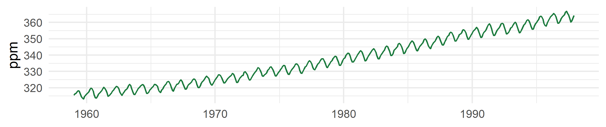
Here the season adds and subtracts a fixed amount. The mean of \(y_t - CMA_t\) for each month:
| Jan | Feb | Mar | Apr | May | Jun | Jul | Aug | Sep | Oct | Nov | Dec |
|---|---|---|---|---|---|---|---|---|---|---|---|
| -0.05 | 0.61 | 1.38 | 2.52 | 3.00 | 2.33 | 0.81 | -1.25 | -3.05 | -3.25 | -2.07 | -0.96 |
Which two pieces do you see? Which moves the series more over the whole record?
The series starts at 315.42 and ends at 364.34. The average rise per year over the 39 years?
Which month is highest, which lowest? The peak-to-trough distance?
Compare that distance with one year of trend, and with the total rise. Which is larger?
A steady trend up and a yearly season. The trend moves the series far more.
\((364.34 - 315.42) / 39 = 1.254\) ppm a year.
May is highest (3.00), October lowest (-3.25): a distance of 6.25 ppm.
The season (6.25 ppm) is larger than one year of trend (1.25 ppm), but far smaller than the 48.9 ppm rise of the whole record. Additive or multiplicative? (appendix)
[W14 set #1, #6]
| The statement |
|---|
| a. MAPE takes into account the size of the forecasted values. |
| b. MSE and RMSE punish large errors more than the other measures. |
| c. MPE shows whether a model forecasts too high or too low on average. |
| d. MAD measures each error relative to the observation. |
| e. MAE punishes large errors heavily. |
| f. MSE shows a consistent bias. |
| g. The mean error is 0, so the forecasts equal the true values. |
a False: MAPE divides by the actual values. b True: squares make big misses count more. c True: its sign is the direction. d False: MAD (MAE) is in the units of \(y\). e False: every miss counts in proportion. f False: squares have no sign; use ME or MPE. g False: misses up and down cancel.
[W14 set #2, #4, #5]
You forecast the cost of shipping (pesos) and the time a shipment takes (days). To compare the accuracy of the two models: MSE, MAPE, MAE or ME?
MAPE: the two are in different units; a percentage error has none. The same answer for comparing forecasts of average income and of interest rates.
Which is true? (a) The cyclical component always repeats with the same period. (b) The seasonal naive forecast is the average of the last seasonal cycle. (c) With a strong trend, a moving average of smaller order is better than one of larger order. (d) MAPE shows whether a method forecasts too high or too low.
(c): a long window lags behind a trend. (a) is the season, not the cycle; (b) the seasonal naive copies the same season one cycle back; (d) MAPE has no sign.
[W14 set #7]
Two years of quarterly sales (units):
| t | 1 | 2 | 3 | 4 | 5 | 6 | 7 | 8 |
| Quarter | Q1 | Q2 | Q3 | Q4 | Q1 | Q2 | Q3 | Q4 |
| Sales | 88 | 96 | 110 | 102 | 94 | 103 | 118 | 109 |
The naive forecast for \(t = 9\). (b) The seasonal naive forecast. (c) The forecast of a moving average of 4 quarters.
The three differ a lot. What does each rule assume about the series?
Which would you trust for \(t = 9\), and why?
Naive: no season; the next quarter looks like the last one. Seasonal naive: the season repeats exactly, no trend. Moving average: a slowly moving level, the season averaged away.
The seasonal naive, nudged up for growth: Q3 is high and Q1 low in both years, and each quarter of year 2 is 6 to 8 units above year 1, so about \(94 + 7 \approx 101\). The naive uses a Q4 to forecast a Q1.
[W14 set #8]
| Actual | 120 | 132 | 125 | 140 | 138 |
| Forecast | 115 | 130 | 130 | 135 | 145 |
The five errors. (b) ME, MAD and MSE. (c) RMSE. (d) MPE and MAPE.
ME and MPE are close to 0 while MAD is 4.8. What does that say about the method?
A manager wants the typical size of a miss in percent. Which measure do you report?
5, 2, -5, 5, -7. (b) ME = 0.0, MAD = 4.8, MSE = 25.6. (c) RMSE = 5.06. (d) MPE = 0.036%, MAPE = 3.67%.
Unbiased but not precise: right on average, because misses up and down cancel, yet a typical miss is still 4.8 units.
MAPE, 3.67%: “we are off by about 4% in a typical month”.
[W14 set #10]
Demand over five periods: 100, 106, 109, 117, 121. Holt with \(\alpha = 0.2\) and \(\beta = 0.3\), starting from \(L_1 = 100\) and \(B_1 = 6\).
\(L_t\) and \(B_t\) for \(t = 2, \dots, 5\).
The forecast for \(t = 6\). (c) The forecast for \(t = 7\).
Smoothing without a slope would forecast about 118 for every future period. Why is Holt higher, and which is right here?
What goes wrong with Holt on a series with no trend?
\(L\): 106.000, 111.400, 117.176, 122.586; \(B\): 6.000, 5.820, 5.807, 5.688. For example \(L_3 = 0.2 \times 109 + 0.8 \times (106 + 6) = 111.4\).
\(L_5 + B_5 = 128.27\). (c) \(L_5 + 2B_5 = 133.96\).
Smoothing has no slope: a flat line at the current level. Holt carries the slope of about 5.7 a period forward. The series climbs 21 units in four periods: Holt is right.
It fits a slope to noise and carries it forward; the forecasts drift further off the further ahead we look.
[W14 set #11]
Quarterly earnings per share of Johnson & Johnson, 1960–1980, 84 quarters (R’s own JohnsonJohnson):
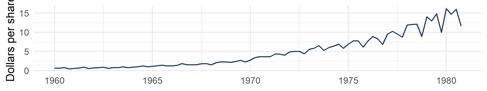
The seasonal indices (multiplicative), and the last eight quarters:
| Q1 | Q2 | Q3 | Q4 |
|---|---|---|---|
| 0.993 | 1.033 | 1.114 | 0.860 |
| 1979 Q1 | 1979 Q2 | 1979 Q3 | 1979 Q4 | 1980 Q1 | 1980 Q2 | 1980 Q3 | 1980 Q4 |
|---|---|---|---|---|---|---|---|
| 14.04 | 12.96 | 14.85 | 9.99 | 16.20 | 14.67 | 16.02 | 11.61 |
Describe the trend and the season. Which quarter is strongest, which weakest?
Keep the first 80 quarters (to 1979 Q4) for training; 1980 is the test. Forecast 1980 with the naive rule and with the seasonal naive rule.
MAE and MAPE for each rule. Which wins, and by how much?
Why does the naive rule do so badly here? On what kind of series would it do fine?
A strong trend up that speeds up, and a quarterly season whose swings grow with the level. Q3 strongest (1.114); Q4 weakest (0.860), about 14% below a typical quarter.
Naive: 9.99 four times. Seasonal naive: 14.04, 12.96, 14.85, 9.99.
Naive: MAE 4.635, MAPE 30.5%. Seasonal naive: MAE 1.665, MAPE 11.6%. The seasonal naive wins: its MAE is 2.8 times smaller.
The last training value is a Q4, the weakest quarter, and the naive rule ignores the trend. It does fine on a series with no season and no trend.
[W14 set #12]
The yearly flow of the Nile at Aswan, 1871–1970 (R’s own Nile). The mean of 1871–1898 is 1,097.75; the mean of 1899–1970 is 849.97.
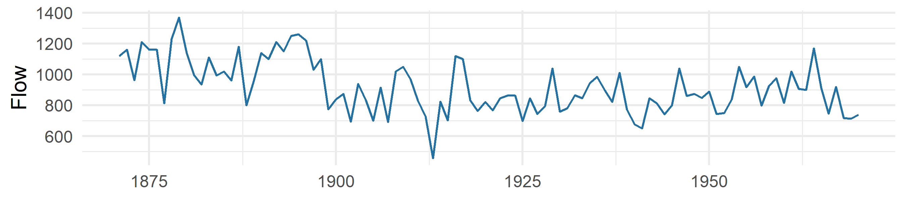
A smooth trend, or something else? How large is the drop?
How does a level shift differ from a trend?
A straight-line trend fitted to the whole series forecasts the year 2000. Why is that misleading?
A linear trend, or simple exponential smoothing with a moderate \(\alpha\)? Why?
A water authority plans capacity from this series. Which part of the record would you use?
No smooth trend: a high level until the late 1890s, then a sudden drop of 247.78 to a lower level.
A trend changes the level a little every period; a level shift is one jump from one flat level to another.
The early high years tilt the line down, and it keeps falling forever: the 2000 forecast lands far below the level of the last seventy years.
Smoothing: after a shift it re-anchors on the recent values within a few years; a trend line never recovers.
From 1899 on: the earlier years describe a river that no longer exists.
Monthly sales of an ice-cream shop over eight years, built from four pieces.
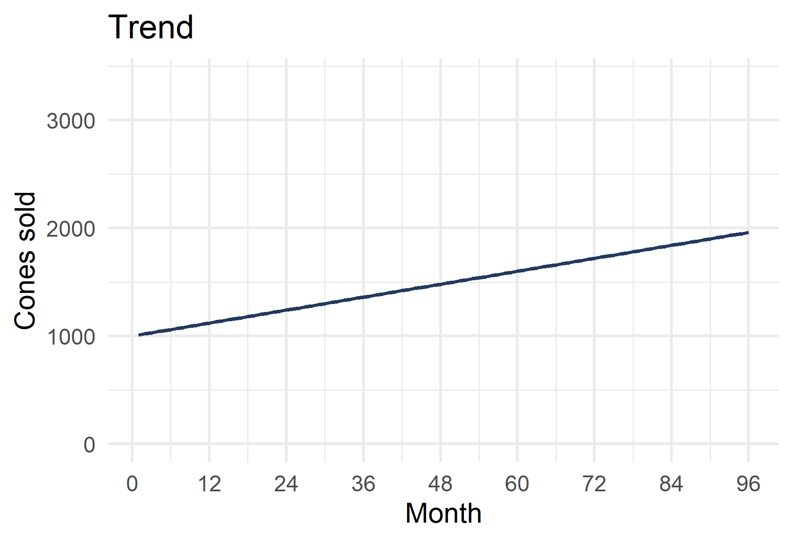
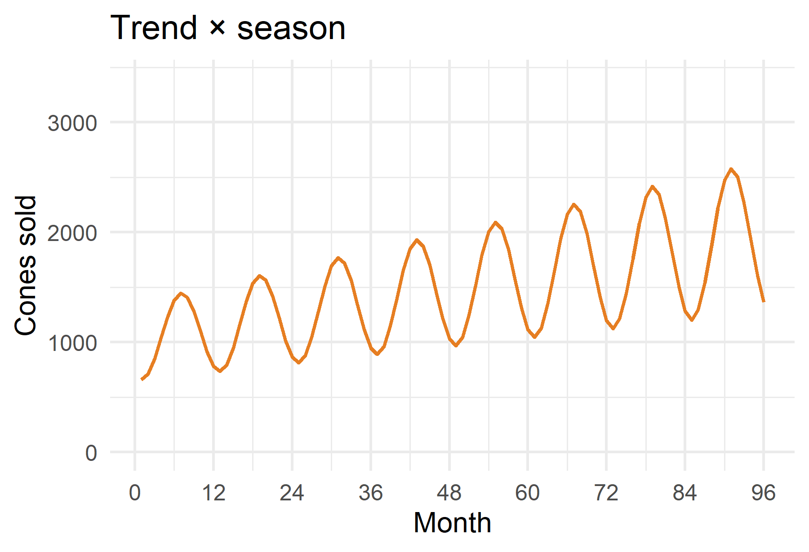
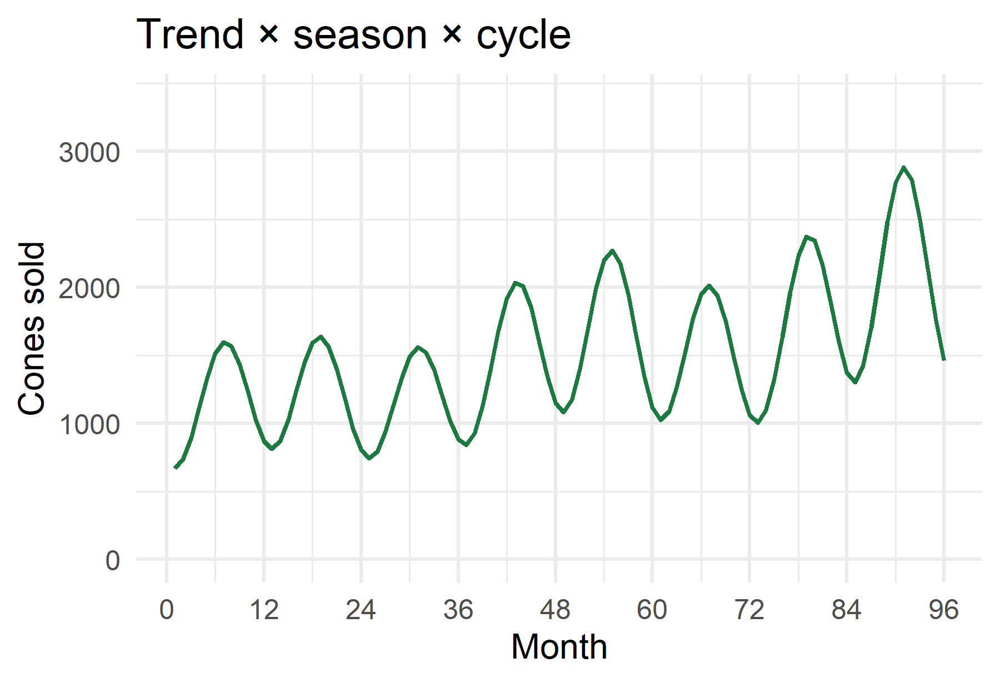
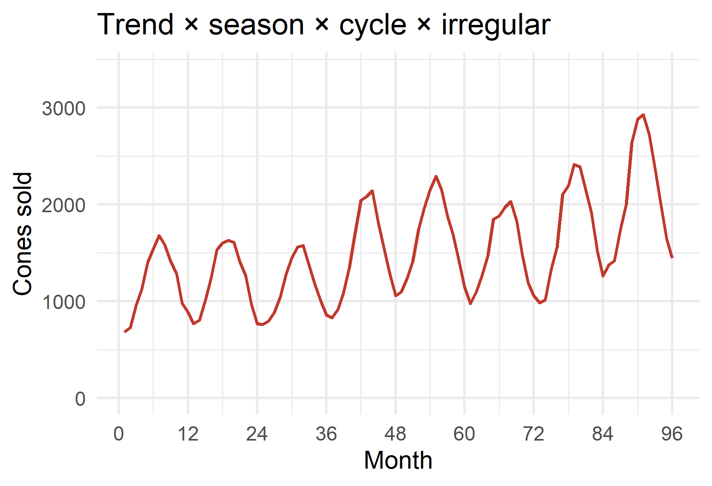
Trend: the long-run direction. Here sales grow by 10 cones every month.
Season: the same shape every year, at the same time of year. Summer is high, winter is low.
Cycle: slow waves above and below the trend, of no fixed length. Often the business cycle.
Irregular: what is left, the random part nobody can predict.
A 95% interval: \(\hat y_{T+h} \pm 1.96\,\cssId{mt-sigh}{\hat\sigma_h}\).
| Rule | \(\hat\sigma\): the standard deviation of | \(\hat\sigma_h\), \(h\) periods ahead |
|---|---|---|
| Naive | the changes from one period to the next, \(y_t - y_{t-1}\) | \(\hat\sigma\,\cssId{mt-sqh}{\sqrt{h}}\) |
| Seasonal naive | the changes from one season to the next, \(y_t - y_{t-S}\) | \(\hat\sigma\,\cssId{mt-sqk}{\sqrt{k+1}}\) |
| Mean | the data \(y_t\) | \(\hat\sigma\,\cssId{mt-sqT}{\sqrt{1 + 1/T}}\) |
One period ahead the forecast error is like a residual: \(\hat\sigma_1 = \hat\sigma\). Further ahead, only the naive interval keeps growing. ← Back to the four rules
From the data up to December 2024: the standard deviation of the monthly changes is \(\hat\sigma = 13{,}927\); of the yearly changes, \(\hat\sigma = 6{,}558\).
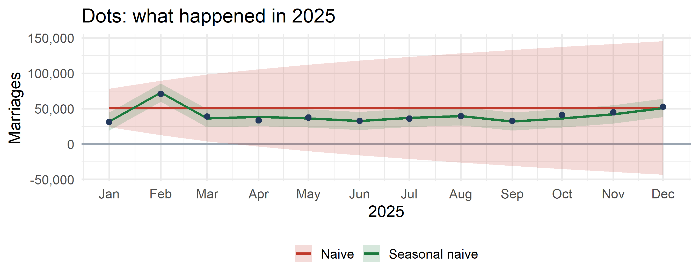
A series is stationary when its mean, its variance and its autocorrelation (next appendix slides) do not change over time.
Which series so far are stationary?
None. The marriages have a trend and a season, the same-sex marriages a trend, the four series of section 1 trends, seasons or cycles. First differences remove a trend; a moving average removes a season. ← Back to the pieces
A lag is the value of the series some periods before:
\[\cssId{mt-lag1}{y_{t-1}} \qquad\qquad \cssId{mt-lag12}{y_{t-12}}\]
If past values move with today’s value, they help to forecast it.
Which correlation is larger: this month’s marriages with last month’s, or with the same month one year before? ← Back to the pieces
The first 14 months of marriages:
| year | month | t | marriages | lag1 | lag12 |
|---|---|---|---|---|---|
| 1993 | 1 | 1 | 54,850 | NA | NA |
| 1993 | 2 | 2 | 54,271 | 54,850 | NA |
| 1993 | 3 | 3 | 55,350 | 54,271 | NA |
| 1993 | 4 | 4 | 52,268 | 55,350 | NA |
| 1993 | 5 | 5 | 59,671 | 52,268 | NA |
| 1993 | 6 | 6 | 47,557 | 59,671 | NA |
| 1993 | 7 | 7 | 54,503 | 47,557 | NA |
| 1993 | 8 | 8 | 51,534 | 54,503 | NA |
| 1993 | 9 | 9 | 46,000 | 51,534 | NA |
| 1993 | 10 | 10 | 51,590 | 46,000 | NA |
| 1993 | 11 | 11 | 54,052 | 51,590 | NA |
| 1993 | 12 | 12 | 77,921 | 54,052 | NA |
| 1994 | 1 | 13 | 54,735 | 77,921 | 54,850 |
| 1994 | 2 | 14 | 53,753 | 54,735 | 54,271 |
lag1? In lag12?marriages with lag1, or with lag12? Why?lag1 in February 1993 and lag12 in January
lag12: the same month a year before is in the same season. February follows a low January; it looks like the February before it.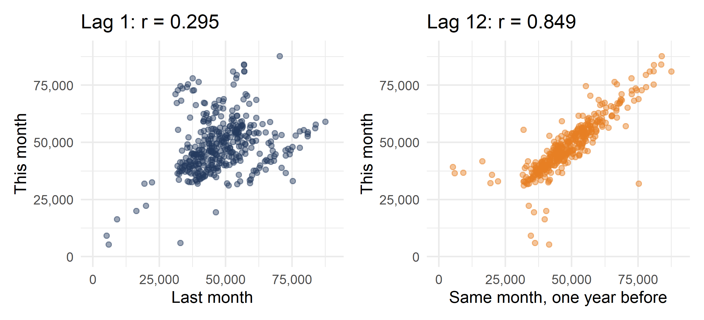
The correlation of a series with its own past, \(k\) periods before, is the autocorrelation at lag \(k\):
\[\hat\rho_k = \frac{\cssId{mt-acfnum}{\sum_{t=k+1}^{n}(y_t-\bar y)(y_{t-k}-\bar y)}}{\cssId{mt-acfden}{\sum_{t=1}^{n}(y_t-\bar y)^2}}\]
It uses the mean and the variance of the whole series, so it differs a little from the correlations of the scatterplots: lag 1, 0.295 (scatterplot 0.295); lag 12, 0.823 (scatterplot 0.849).
The ACF for lags 1, 2, 3, … drawn as bars is a correlogram.
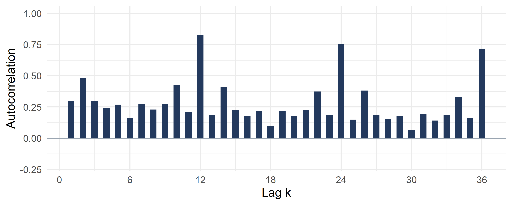
Why are the bars tall at lags 12, 24 and 36? Why at 2 and 10?
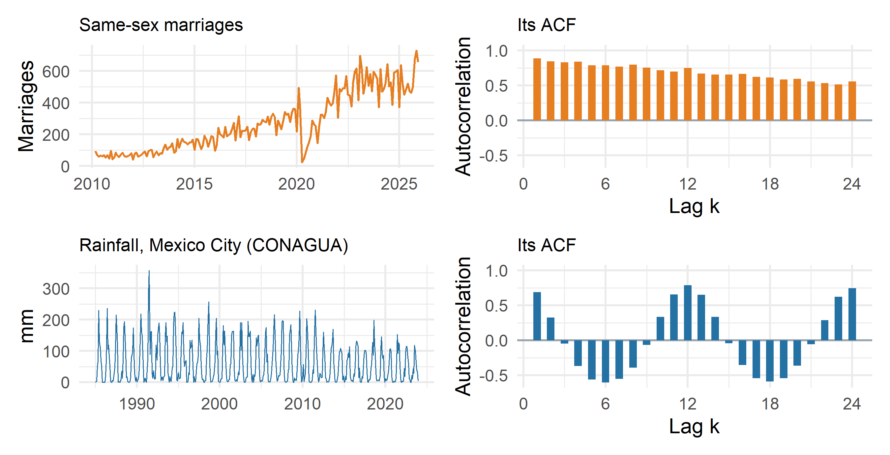
What does a trend do to the ACF? And a season with no trend?
| In the series | In the ACF |
|---|---|
| A trend | large and positive at lag 1, falling slowly: same-sex marriages, 0.88 at lag 1 and still 0.55 at lag 24 |
| A season of \(S\) periods | tall bars at \(S\), \(2S\), \(3S\); with a smooth pattern, negative at \(S/2\): rainfall, 0.79 at 12 and -0.61 at 6 |
| A shock that lasts | bars that die out slowly; in a stationary series they die out fast |
| No pattern at all | every bar close to 0 |
A series with every bar close to 0 has no memory: its past says nothing about its future. Is a bar different from 0?
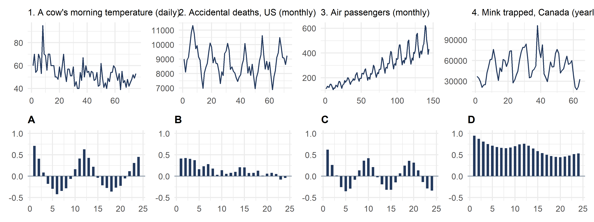
Sources: fma package and R’s own USAccDeaths, AirPassengers.
| Series | ACF | Why |
|---|---|---|
| 1. Cow temperature | B | no trend, no season: the bars die out fast |
| 2. Accidental deaths | A | a season of 12 with no trend: positive at 12, negative at 6 |
| 3. Air passengers | D | a trend (slow decay) and a season (bumps at 12 and 24) |
| 4. Mink | C | a cycle of about ten years: a slow wave, no fixed season |
A sample ACF is never exactly 0, even for a series with no memory. How large must it be before we believe it?
\[H_0: \rho_k = 0 \ \text{(the data are white noise)} \qquad \text{against} \qquad H_A: \rho_k \neq 0\]
White noise: values uncorrelated over time, with mean 0 and constant variance. It is stationary.
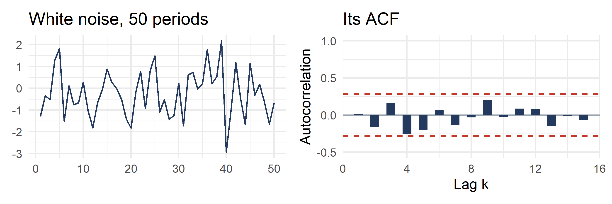
If the data are white noise, \(\hat\rho_k\) is close to normal around 0. The test statistic:
\[t = \frac{\hat\rho_k - 0}{\cssId{mt-acfse}{1/\sqrt{n-k}}} \sim t_{n-k}\]
Rule of thumb for long series: reject at 5% if \(|\hat\rho_k| > 2/\sqrt{n}\). The marriages have \(n = 396\): the bands are \(\pm 2/\sqrt{396} = \pm 0.1005\).
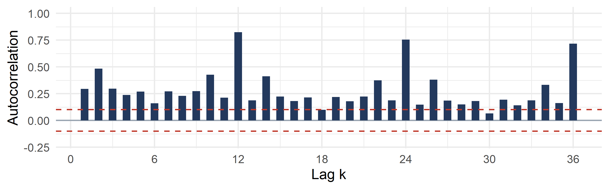
Every bar of the marriages is outside the bands. The more observations, the better we detect autocorrelation. ← Back to the rules
The same-sex marriages: the ACF is 0.88 at lag 1 and falls slowly. The trend dominates, and hides any other pattern.
First differences: how much the series changed from one period to the next.
\[\cssId{mt-dy}{\Delta y_t} = y_t - \cssId{mt-dylag}{y_{t-1}}\]
If the trend is a straight line, the series grows by about the same amount every period. Then the differences have a constant mean: the trend is gone. ← Back to the pieces
Same-sex marriages, January to July 2025:
| Jan | Feb | Mar | Apr | May | Jun | Jul |
|---|---|---|---|---|---|---|
| 371 | 638 | 517 | 450 | 488 | 520 | 474 |
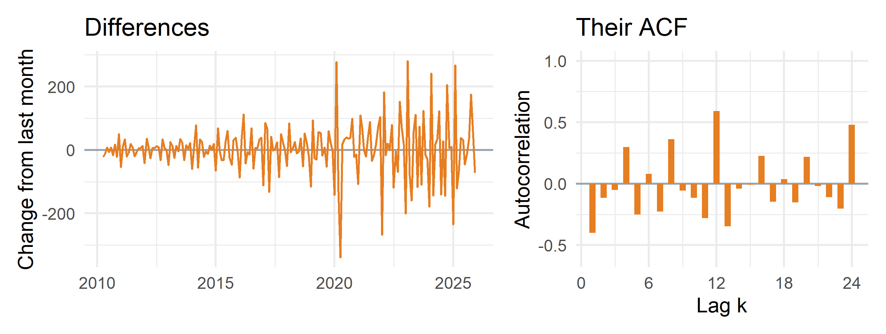
Another way to remove a straight-line trend: regress the series on \(t\) and keep the residuals, as in step 3 of the decomposition.
\(CMA_t = \frac{1}{2} \times \frac{{\color{#c0392b}{y_{t-6}}} + y_{t-5} + \cdots + y_{t+5}}{12} + \frac{1}{2} \times \frac{y_{t-5} + \cdots + y_{t+5} + {\color{#c0392b}{y_{t+6}}}}{12}\)
The definition Two 12-month averages: one starts a month earlier, one ends a month later.
\(= \frac{{\color{#c0392b}{y_{t-6}}} + 2\,({\color{#2471a3}{y_{t-5} + \dots + y_{t+5}}}) + {\color{#c0392b}{y_{t+6}}}}{24}\)
Add the two sums The eleven middle months are in both averages; the two ends in one only.
\(= \boxed{\frac{1}{24}\,{\color{#c0392b}{y_{t-6}}} + \frac{1}{12}\,({\color{#2471a3}{y_{t-5} + \dots + y_{t+5}}}) + \frac{1}{24}\,{\color{#c0392b}{y_{t+6}}}}\)
Thirteen months, half weight at the ends The two ends are the same month of the year, a year apart: together they count as one month.
Quarterly: \(CMA_t = \frac{1}{8}y_{t-2} + \frac{1}{4}(y_{t-1} + y_t + y_{t+1}) + \frac{1}{8}y_{t+2}\). ← Back to the centred moving average
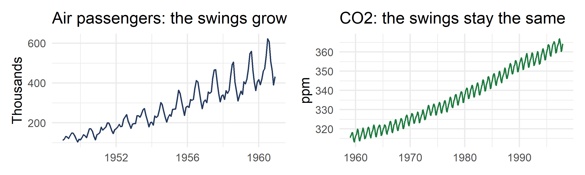
| Model | The season | Use when | |
|---|---|---|---|
| Multiplicative | \(y_t = T_t \times S_t \times C_t \times R_t\) | a share: \(S = 1.2\) adds 20% | the swings grow with the level |
| Additive | \(y_t = T_t + S_t + C_t + R_t\) | an amount: \(S = 3\) adds 3 units | the swings stay the same size |
Additive: seasonal factors are differences \(y_t - CMA_t\); the indices add up to 0. d <- decompose(x, type = "multiplicative") (or "additive") does steps 1–3 in one line for a ts series; d$figure holds the indices. Not on the exam sheet. ← Back to exam practice 7
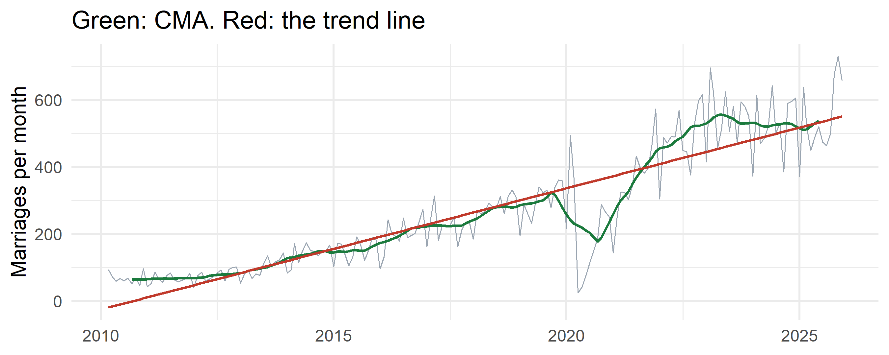
\(T_t = -21.8 + 3.01\,t\) (\(t = 1\) in March 2010): about 36 more same-sex marriages a month every year. The CMA bends: a straight line misses the latest years. ← Back to same-sex marriages
\(L_T = \alpha\, y_T + (1-\alpha)\,{\color{#c0392b}{L_{T-1}}}\)
The rule The new level: a share \(\alpha\) of the newest value, the rest from the old level.
\(= \alpha\, y_T + (1-\alpha)\,{\color{#c0392b}{[\alpha\, y_{T-1} + (1-\alpha)\, L_{T-2}]}}\)
The same rule, one period earlier \(L_{T-1}\) was built the same way from \(y_{T-1}\) and \(L_{T-2}\).
\(= \alpha\, y_T + {\color{#2471a3}{\alpha(1-\alpha)}}\, y_{T-1} + (1-\alpha)^2\, L_{T-2}\)
Multiply out Last month’s value gets the weight \(\alpha(1-\alpha)\): smaller than \(\alpha\).
\(= \boxed{\alpha\, y_T + \alpha(1-\alpha)\, y_{T-1} + \alpha(1-\alpha)^2\, y_{T-2} + \cdots}\)
Repeat back to the start Each month further back is multiplied by one more \((1-\alpha)\): the weights shrink like a geometric series and add up to 1.
Section 3 forecast all of 2025 from December 2024: 1 to 12 months ahead. Another way measures one-month-ahead errors only:
For the naive rule this means forecasting each month with the month before it. Its MAPE goes from 36.6% (all from December) to 27.2%: still poor, because the month before is in another season. ← Back to hold out the last year
The mean gives every past month the same weight. The naive gives the last month all the weight. Simple exponential smoothing sits in between:
\[\cssId{mt-sesL}{L_t} = \cssId{mt-sesa}{\alpha}\, y_t + (1 - \alpha)\, L_{t-1} \qquad\qquad \hat y_{T+h} = L_T\]
Written out, the level is a weighted average of all past values, with weights that shrink:
\[L_T = \alpha\, y_T + \alpha(1-\alpha)\, y_{T-1} + \alpha(1-\alpha)^2\, y_{T-2} + \cdots\]
Which reacts faster to a change: \(\alpha = 0.2\) or \(\alpha = 0.6\)? ← Back to which method when
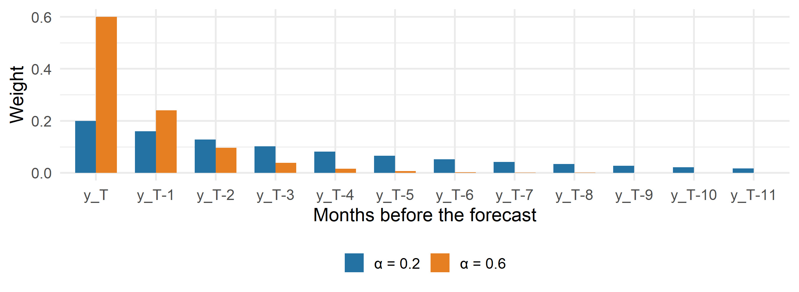
A season is not a level. Smooth the seasonally adjusted series of step 2, \(y_t / S_t\), then put the season back: \(\hat y_{T+h} = L_T \times S_{T+h}\).
Which \(\alpha\) gives the smallest misses one month ahead?
About 0.3. Smaller: the level reacts too late. Larger: it chases the noise. The typical miss is 5,907 at 0.05, 5,381 at 0.3 and 6,295 at 1, the naive rule.
The smoothed level of the seasonally adjusted marriages in September 2024 is \(L = 40{,}053\). Use \(\alpha = 0.3\).
| Month | Marriages | Seasonal index \(S\) |
|---|---|---|
| October 2024 | 36,374 | 0.9502 |
| November 2024 | 42,063 | 0.9845 |
| December 2024 | 51,125 | 1.3695 |
| Method | ME | MAE | RMSE | MPE | MAPE |
|---|---|---|---|---|---|
| Naive | -10,155 | 13,759 | 14,810 | -31.4% | 36.6% |
| Seasonal naive | 416 | 1,872 | 2,438 | 0.8% | 4.7% |
| Mean | -7,788 | 12,181 | 13,299 | -25.3% | 31.8% |
| Moving average, 12 months | 416 | 7,542 | 10,788 | -4.2% | 17.1% |
| Moving average, 3 months | -2,217 | 8,741 | 11,005 | -11.0% | 21.2% |
| Decomposition (sections 4–8) | 1,194 | 3,847 | 5,714 | 0.9% | 8.4% |
| Smoothing × season (appendix) | 1,433 | 3,759 | 5,824 | 1.5% | 8.1% |
Same-sex marriages per year, 2011–2018. Smoothing with \(\alpha = 0.5\):
Why does the smoothed level fall behind?
The level only moves part of the way toward each new value, and the next value is always higher. It forecasts 2,844 for 2019; there were 3,596. A trend needs a second piece: a slope.
\[\cssId{mt-holtL}{L_t} = \alpha\, y_t + (1 - \alpha)\,(L_{t-1} + B_{t-1})\]
\[\cssId{mt-holtB}{B_t} = \beta\,(L_t - L_{t-1}) + (1 - \beta)\, B_{t-1}\]
\[\cssId{mt-holtf}{\hat y_{T+h}} = L_T + h\, B_T\]
With \(\beta = 0\) the slope never changes; with no slope at all, Holt is simple exponential smoothing.
Same-sex marriages per year, Holt with \(\alpha = 0.5\) and \(\beta = 0.3\). In 2016: \(L_{2016} = 2{,}190\) and \(B_{2016} = 291\).